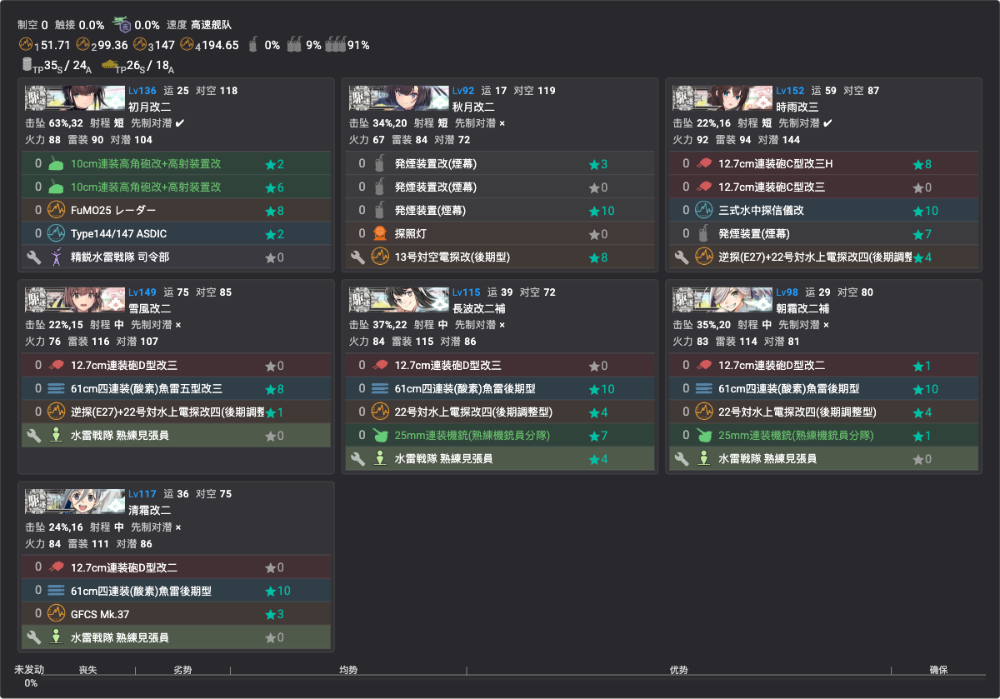
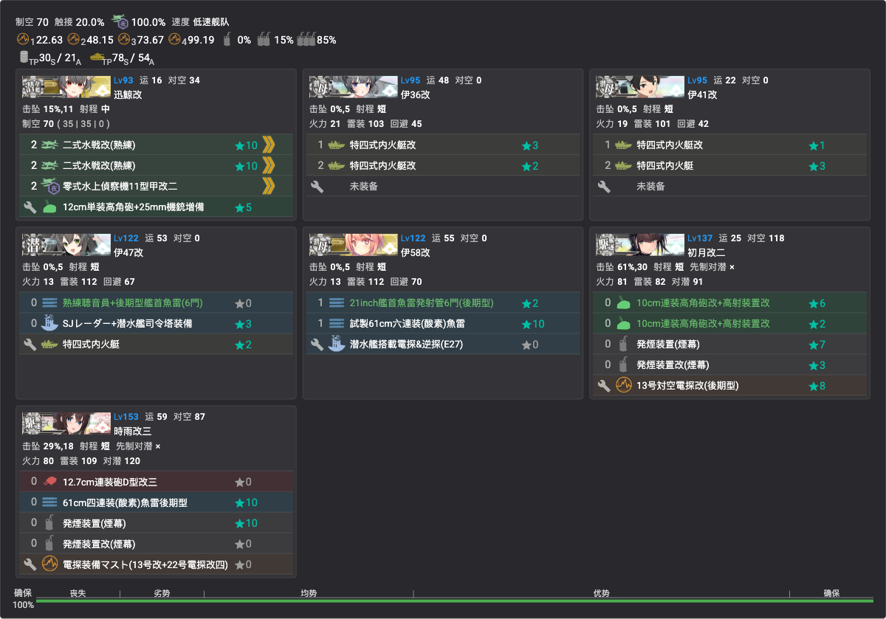
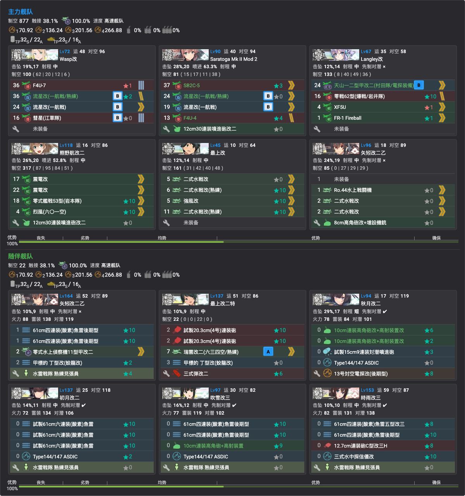
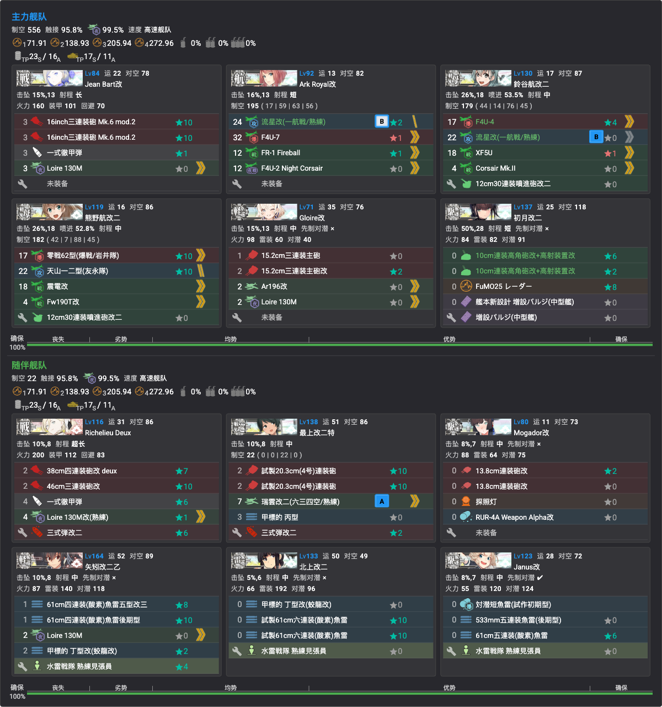
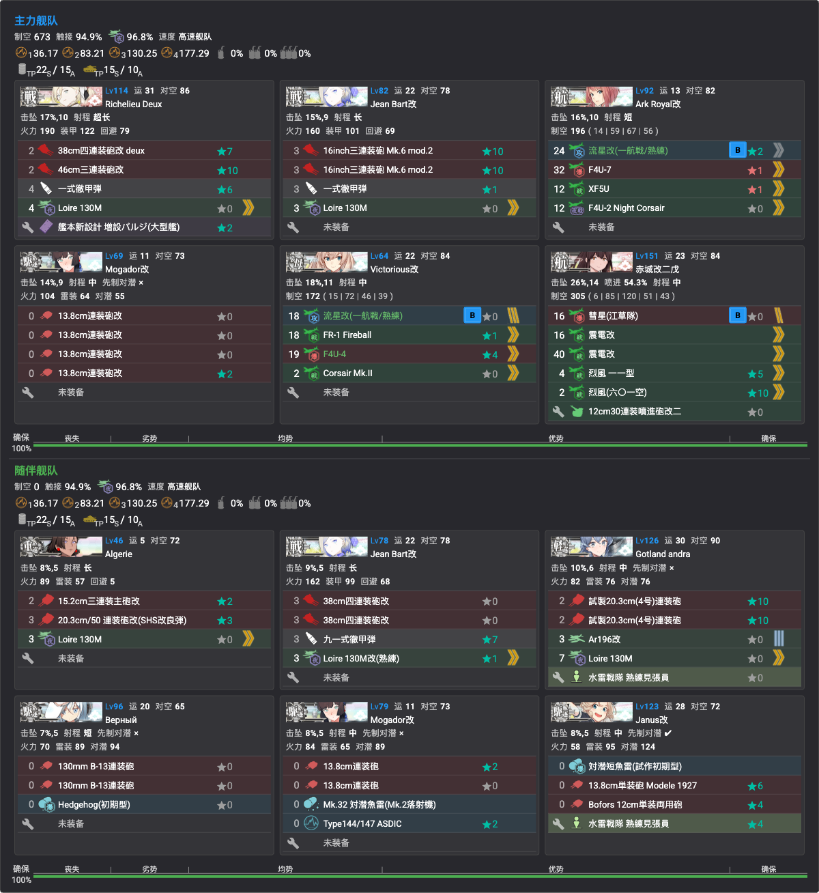

« 椛とみんな · 合集目录
捞船点位与配置
全甲通关后的捞船期方案（2026-07-23 起）。掉率数据见掉落一览；单舰队可出击的点位优先（省资源、免连合编成）。
最终战果（2026-08-24 存档）：✅花月／✅桐／✅凉月（E1 X）、✅Indiana（E3）、✅Visby／✅日枝丸（E5 ZZ）、✅Vautour／✅Conte di Cavour（E4 Z）——全部捞船目标收官（持有列表实证：全表仅 Teste／Gloire 未入手，就此封盘）
点位与编成实录
✅E1 X 点：花月＋桐＋凉月（已收，2026-07-26）
- 掉率（甲，kcwiki n=24013）：花月 2.73%／桐 2.35%／凉月 1.03%——三舰合计约 6.1%/次；A 胜可掉但 S 胜掉率更高，尽量 S
- 编成（✅已录入，见下图）：沿用 E1 P3 攻坚编成（7DD 游击，増強札，✅单舰队）——旗舰带游击司令部，防空 CI＋发烟担当＋水雷夜战组
- 路线 2-M-P-Q-Q2-V2-V-X；⚠️ V→X 索敌门（系数4 ≥80）电探别拆
- X 点（boss）拉烟；陆航可派 V 点（boss 前一点）——通关后无空袭，可全力出击
- 顺带：第二十二号/第三〇号海防舰、冬月、杉、榧同点

✅E3 X 点：Indiana（潜艇队，最省｜已收，2026-07-26）
- 掉率：0.52%（kcwiki）~0.86%（TsunDB）S 限
- 编成（✅已录入，见下图）：AS+2DD+4潜 最短路队（✅单舰队）——AS 旗舰全水战凑制空（X 点确保），4 潜内火艇/鱼雷（内火艇 1.95 倍卡），防空 CI＋双发烟 DD×2
- 路线：最短路 3-R-T-V-X（AS≥1 且 DD≥2 是 R→T 钥匙，低速可，T/V 两个分歧同样放行，AS 在 X 点另吃 1.38 倍卡）；V 点（重巡水雷）拉烟；7 潜艇队（无 AS）低速则走 3-R-S-T-V-X 多打一个 DD 水雷点；忌带 CA——AS+CA+DD 能过 T 但 V 点被弹去 W 吃ネ改
- 嫌 S 胜难 → 下方 E3 Z 点连合队（3.25% S/A）或 E2 Y 点 2.53%

✅E3 Z 点：Indiana＋美舰池（连合，S/A 可掉｜Indiana 已收）
- 掉率：Indiana 3.25%（S/A）；顺带 Lexington 1.6%、伊13 1.5%、Wasp 1.1%、Iowa 0.6%、Saratoga 0.5%（S/A），Intrepid 0.7%（S限）
- 编成（✅已录入，见下图）：高速统一连合——主力 CV×2＋CVL×2＋CAV＋CL 堆制空（CV系恰好 4），随伴 CL＋CAV＋4DD（水雷夜战＋防空 CI＋先制反潜）
- 路线：2-F-A2-G-H（能动选 M）-M-Y1-U-Y-Z——高速统一在 U 点直达 Y，比通关路线省掉 Y2 空袭点；Y 点塔姐门神
- 带路要点：连合→G→H；M 点 CV系（含CVL）≤4（≥5 弹 N）；U 点全队高速（含低速弹 Y2）；Y→Z 甲实测零被弹（电探正常带）

✅E4 Z 点：Vautour＋Conte di Cavour（一队双收，均已收｜TsunDB 2026-07-26）
- 掉率（甲，n=1739）：Vautour 3.91%／Conte di Cavour 1.15%（均 S/A 可掉，S 更高）；同点顺带 Littorio 0.5%、G.Garibaldi 0.9%、Richelieu 0.3%、Mogador 0.2%（S/A），Aquila 0.6%、Zara 0.5%（S限）
- ⚠️ 两舰实质仅此一点：全图聚合 Vautour 70 例中 68 例在 Z、2 例在 X（0.18% S限，无实用价值）；Cavour 20 例全部在 Z——绕不开 P5 boss（本活动最难点），好在 A 胜也可掉
- 编成（✅已录入，见下图）：高速连合（仏地中海艦隊札）——主力法戦＋三航堆制空＋防空 CI，随伴 Richelieu Deux＋雷巡/水雷雷击组；多机 Loire 130M 吃倍卡；无特殊攻击、无发烟，纯堆卡平推
- 路线 3-O-P-P1-T-T1-U-Y-Z（一阵-一阵-三阵-四阵-boss二阵）
- 陆航：一队东海炸 T1 炸鱼点（防潜艇点大破），也可以一队陆攻炸 Z 点 boss
- 通关后 boss 为满血 1200 非斩杀形态

✅E5 ZZ 点：日枝丸（＋速吸／まるゆ｜Visby・日枝丸均已在此收获，2026-07-26）
- 掉率（甲，n=1895）：日枝丸 2.48%（S/A 可掉）；顺带速吸 3.4%、Nelson/Rodney 0.3~0.4%（S/A），Glorious 1.5%、まるゆ 1.1%（S限）
- 编成（✅已录入，见下图）：高速连合法舰堆卡版（欧州連合艦隊札，④出发走法舰≥3/Algérie 条件）——主力法戦×2＋空母×3 堆制空＋Mogador，随伴 Algérie＋法戦②＋防空/对潜 DD；全队多机 Loire 130M 吃 SP 1.12 倍卡
- 路线 4-U-V-X-Y-Y1-Z-ZZ（一阵-四阵-四阵-四阵-boss二阵摸）；Z 点（ne改II 门神）陆航照旧
- 低成本替代（只求日枝丸）：E5 P2 输送编成打 J2 点 1.63%（S限，泊地水鬼 490 血，输送连合较省）；S 点 1.15% 亦可但同样 S 限；最省是 G 点单舰队 0.63%（S限）——见下方单舰队 boss 一览

天城／葛城
- 本活动全图零掉落，定案：前段 kcwiki 全量＋后段 TsunDB 全边聚合（E4 n≈24,426／E5 n≈27,614）均无记录，不必再找
单舰队可出击的 boss 点一览（甲，TsunDB 通过编成验证 2026-07-26）
| boss 点 |
单舰队通过 |
主流编成 |
捞船价值 |
| E1 I（P1） |
✅100% |
CL＋5DD 游击 |
竹/桃/海防舰（S限低率） |
| E1 T（P2 输送） |
✅100% |
CL＋CVL＋5DD |
竹 1.4%／梅 1.2%／桃 1.0%／桐 0.9%（均 S限） |
| E1 X（P3） |
✅100% |
7DD |
✅花月/桐/凉月已收；冬月/榧/海防舰仍可捞 |
| E2 P（P1 输送） |
✅100% |
7DD |
伊36/41 0.2~0.3%（S限）——E2 唯一单队 boss |
| E3 Q（P2 输送） |
✅100% |
轻快 7 舰 |
伊26/第百一号低率 |
| E3 X（P3） |
✅100% |
潜艇队 |
✅Indiana 已收；伊401 1.1%／平安丸 0.9%／大鳳 0.2~0.4%（S限） |
| E4 D（P1） |
✅100% |
CA/CAV/CL＋4DD 游击 |
Pola 0.4%／Teste 0.1%（S限）——后段唯一实用单队 boss |
| E4 N（P2 输送） |
⚠️少量（CA＋CAV＋2DD 四舰记录） |
以连合为主 |
Pola 0.5%／Teste 0.1%（S限） |
| E5 G（P1） |
✅100% |
CL＋CVL＋5DD（对潜向） |
日枝丸 0.63%（S限）——免连合最低成本选项 |
必须连合的 boss：E2 V/Y、E3 O/Z、E4 S/X/Z、E5 J2/S/ZZ（以上各点单舰队通过权重为 0）。
存档备注：Vautour/Cavour（E4 Z）无单舰队方案，最终由连合队收官；日枝丸实际在 ZZ 连合收获。
通用提示
- 捞船期锁船无新风险（全札已开），但仍核对出发点/带路条件避免误走
- S 胜掉率高于 A 胜——即使 A 胜可掉，打得过就争取 S；A 胜只作打不过时的保底
- 捞船编成的旗舰放 MVP 调整位练级两不误
{kind=link}
{kind=link}
{kind=link}
{kind=link}
{kind=link}